portfolio

Oi, eu sou a Julia
Sou uma profissional apaixonada por social media e marketing digital, baseada em Anápolis. Adoro criar conteúdos visuais atraentes e focados no público que resolvem problemas reais de comunicação. Com minha vivência em marketing e edição, construo a ponte perfeita entre a estética visual e os resultados estratégicos.
Experiência
- 2024 - Presente
- Code Tower
- UP Resgate
Skills
- Canva PRO
- Figma
- Social Media Design
- Capcut
- Pacote Office
Contate-me
- julia.santosspinheiro@gmail.com
- (62) 99332-2946
up resgate
Gestão da presença digital e da identidade visual do UP Resgate (Igreja Resgate). A meta foi comunicar a visão do grupo de forma atual e conectada, utilizando paletas bem definidas, artes estruturadas e vídeos com edições atraentes.
O escopo envolveu o design de templates para as redes sociais, estruturação visual do feed e a definição de uma linguagem padrão para manter a essência do ministério unificada.
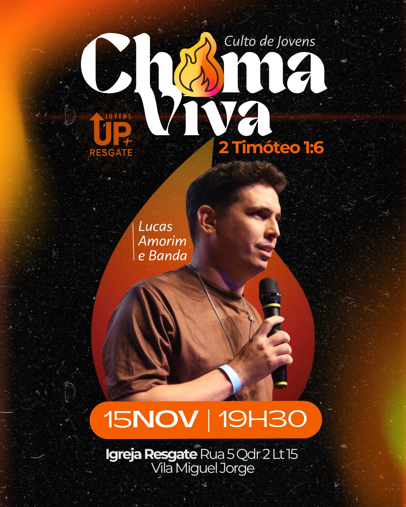
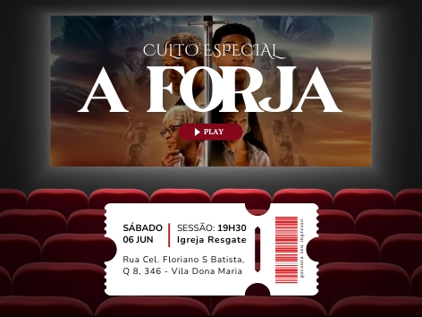
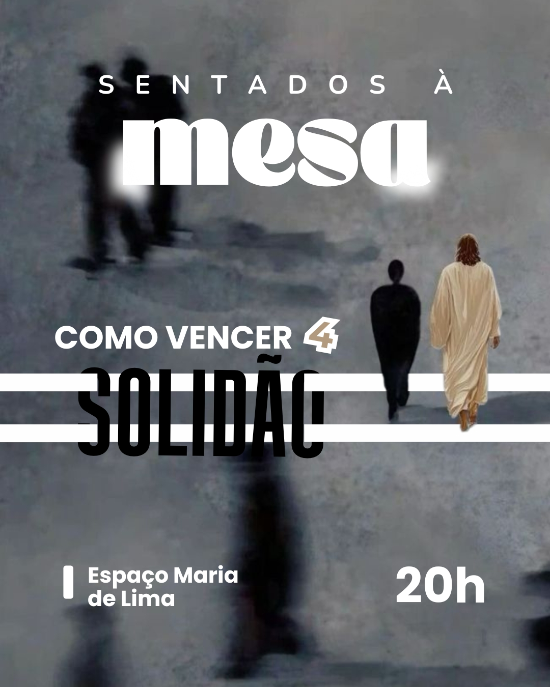
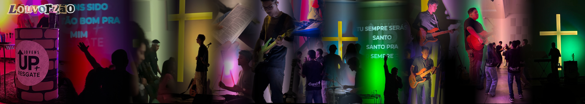
doçuras da thalita
Produção de conteúdo e suporte de marketing digital para a Doçuras da Thalita, confeitaria da minha família. O objetivo foi criar uma comunicação vibrante e de dar água na boca. Focamos em captar fotografias reais e bem iluminadas que fazem as cores e texturas das nossas sobremesas saltarem aos olhos.
O trabalho contínuo mistura a elaboração de cardápios intuitivos e artes modernas para avisos no Instagram oficial, criando um feed único e altamente atrativo que ajuda a impulsionar diretamente os pedidos diários e o nosso delivery.
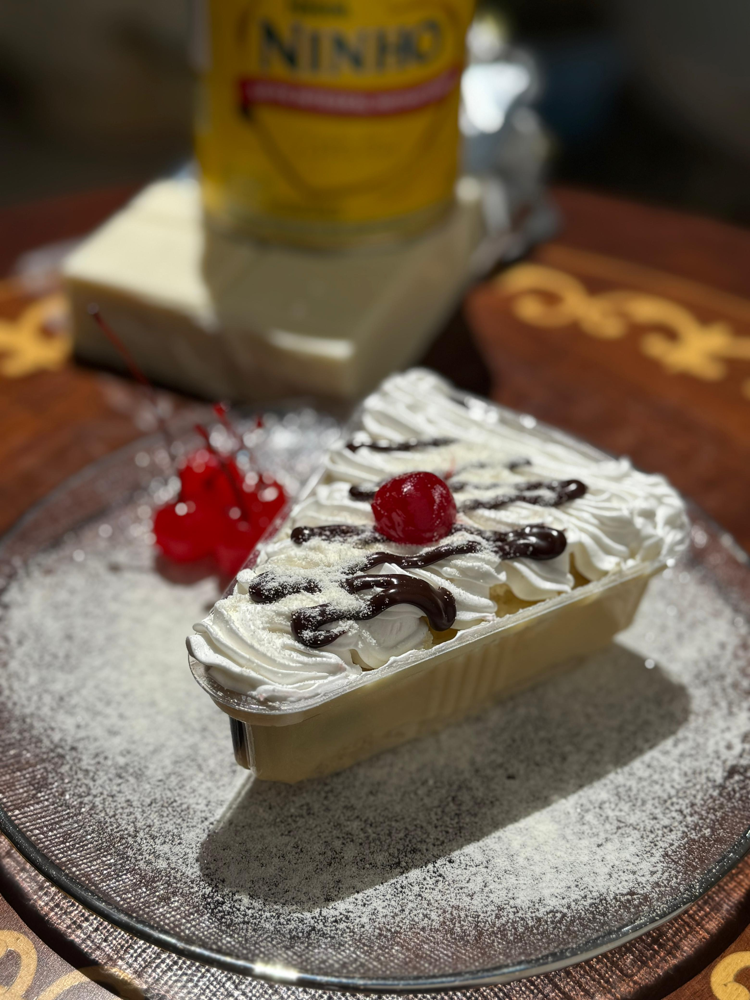
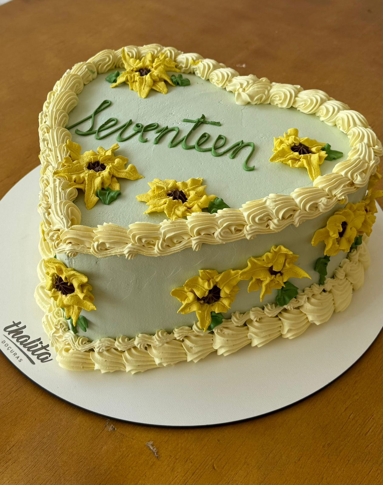

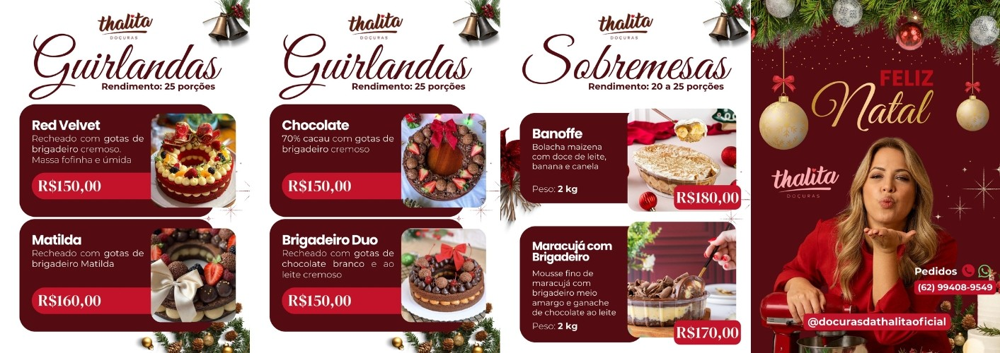
bcc ifg
Desenvolvimento de estratégia e criação de conteúdo para o Instagram de Ciência da Computação do IFG Anápolis (BCC IFG). O objetivo foi criar uma linguagem visual que engajasse os estudantes universitários, sem perder a essência tecnológica da área.
O trabalho englobou a gestão completa da rede: desde a captação de imagens e edição de vídeos dinâmicos para eventos do curso até a padronização estética do feed.
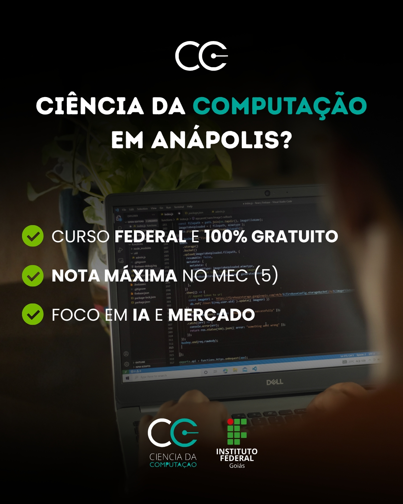
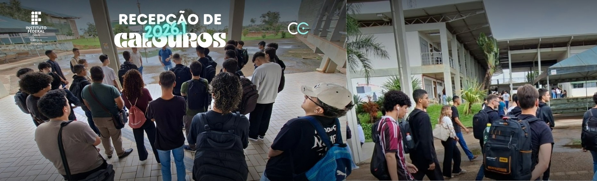
freelas
Criação ágil de peças gráficas para projetos freelance, englobando posts de aniversário, materiais para igrejas, slides personalizados e artes avulsas. O desafio é traduzir as necessidades específicas de cada cliente em formatos visuais atrativos e diretos.
Os designs priorizam a comunicação clara e uma estética sob medida, entregando uma experiência visual de alta qualidade que gera conexão rápida com o público nos mais diversos nichos.
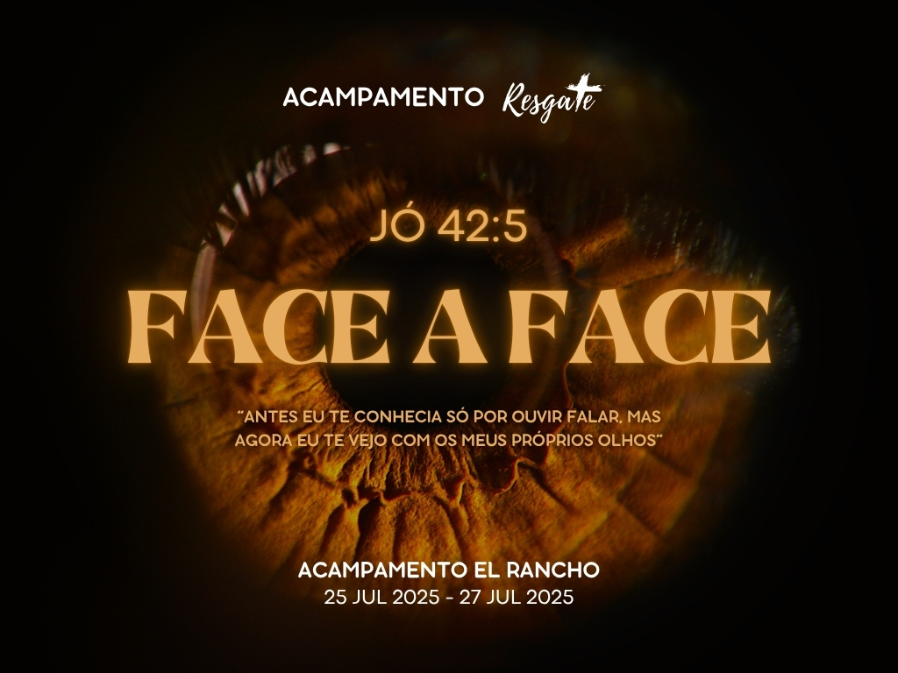
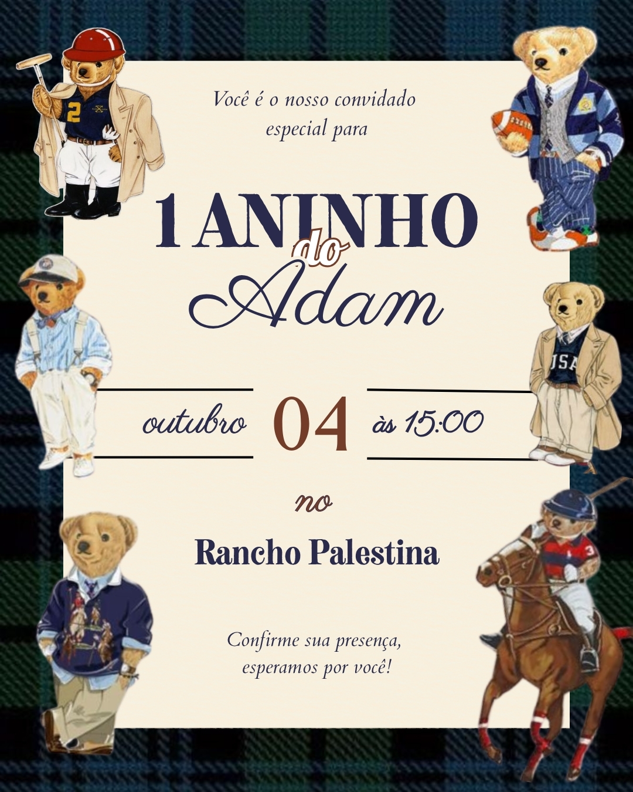
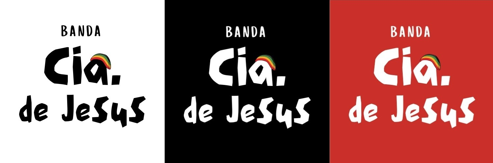